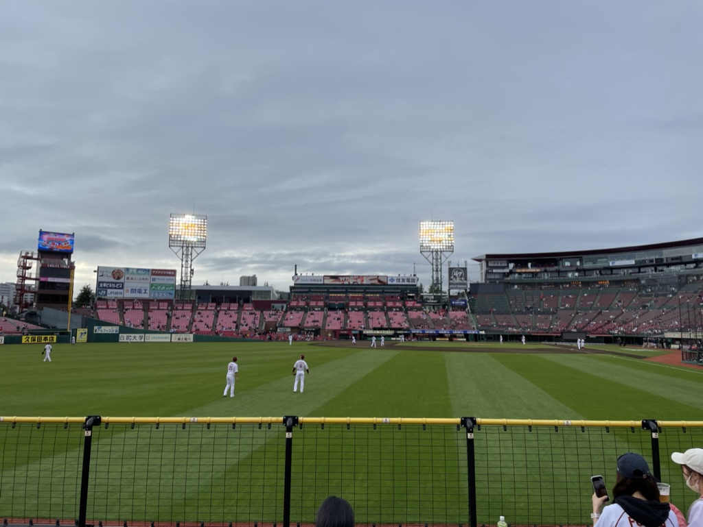

「仕事」をきっかけに
人生の新しいスタートを！
大事なお仕事探しを応援させてください
はじめまして。代表取締役社長のショーン・デイビット.Jrです。
私はそこそこ幸せです。それは仕事が楽しいからです。もちろん仕事=人生ではありません。でも仕事は人生の大事な基盤のように思っています。
株式会社START_OCHIは、みなさんが仕事をきっかけに理想の人生を実現する手助けをしています。
幸せにつながるお仕事紹介サービス『スタート』や、共通の目標を目指す仲間が見つかる人材紹介SNS『ゴール』を運営しています。
また、Webデザインの基礎スキルを身につけられるスクール『Webの学校』も随時開講しています。
